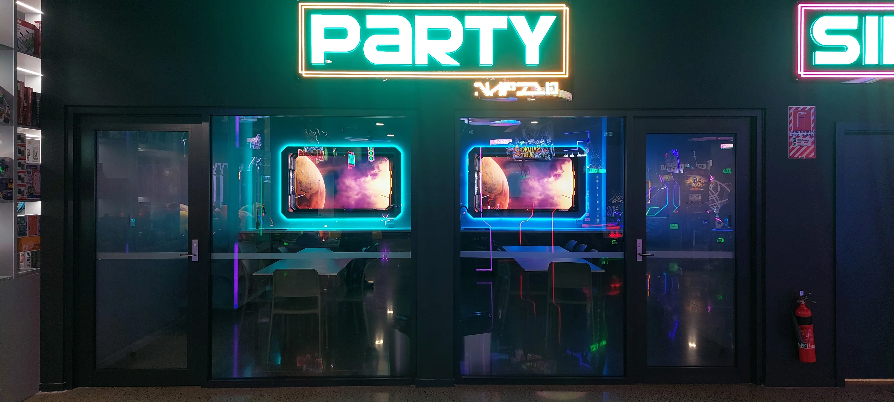
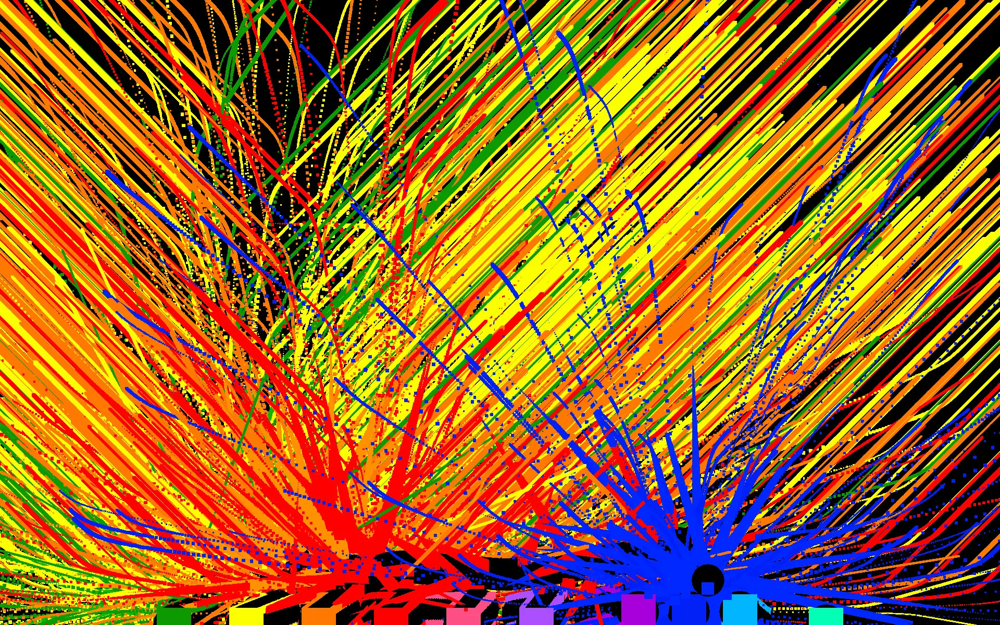
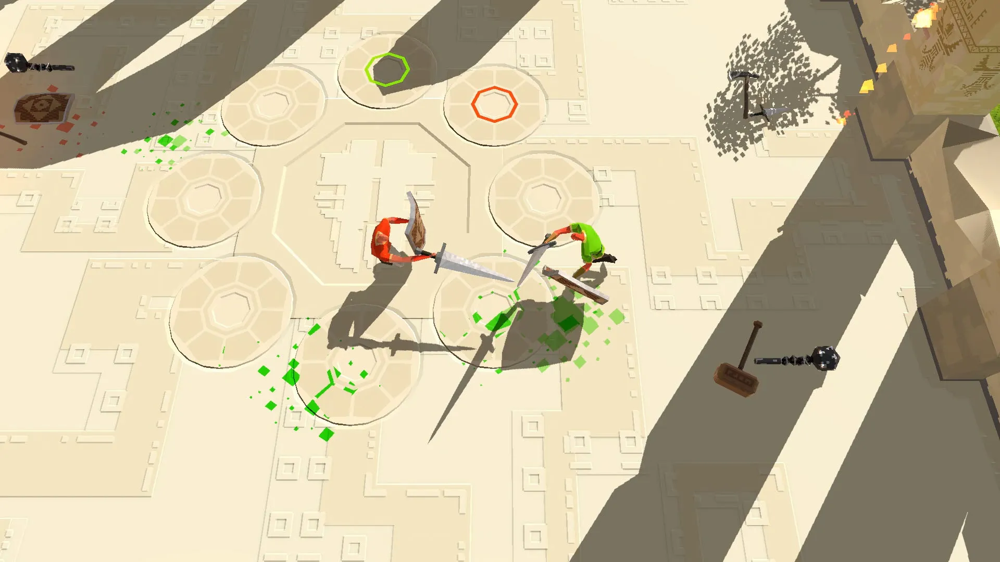
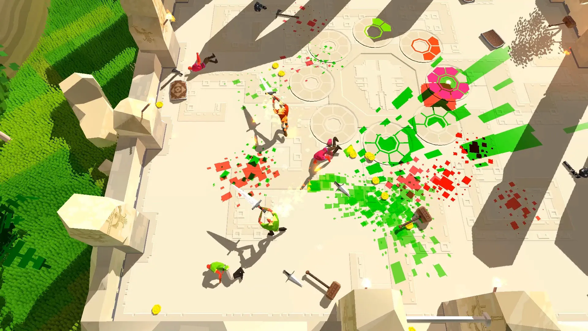
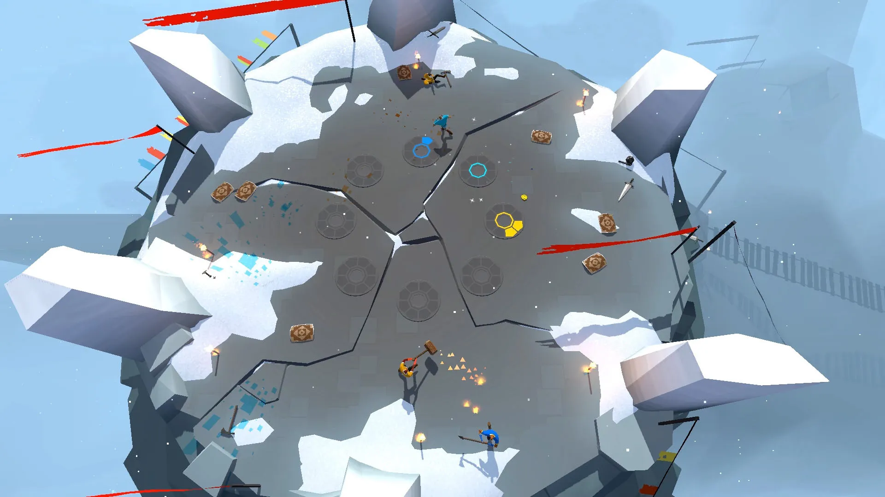
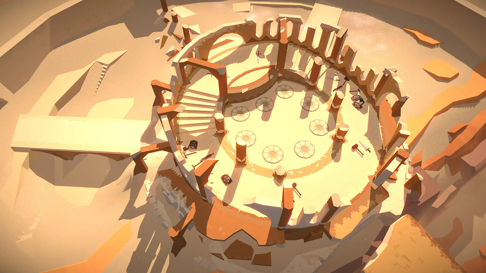
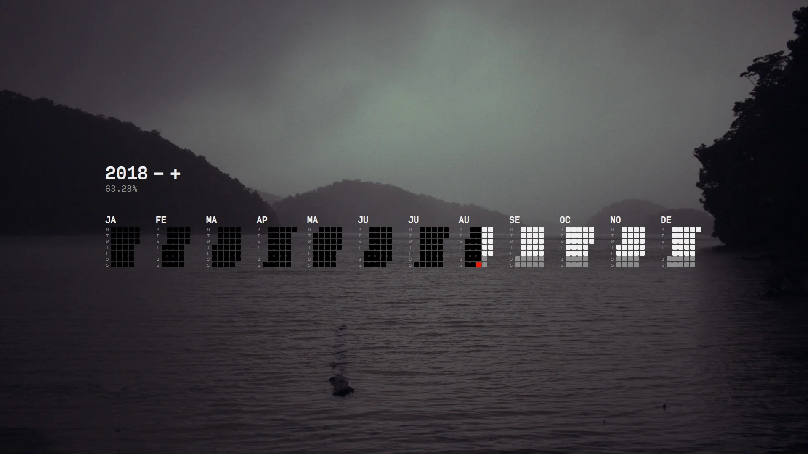

Digital
Gameon

I got to work with the talented people at Luma Audiovisual that built a whole real-life sci-fi laser tag arena with some sophisticated audiovisual tech throughout. I was brought on to create a set of animated digital porthole views of space outside and a cinematic flight animation going from space to surface of a planet.
The challenge of any business is iteration speed. Whether you're creating futuristic entertainment, SaaS or even sell "Analogue Services", one of your constraints will always be how fast you can create outputs to assess your inputs to make better decisions every time you iterate.
Unity engine was the authoring environment which allowed me to bring together a variety of manually sculpted, pre-rendered, procedurally generated, scripted, kit-bashed and AI assisted assets, along with my realtime lighting, shading and graphics pipeline expertise. It enabled framing, animation, lighting, keying and physics simulations to happen in real-time.
If you don't have to wait seconds and minutes or hours to see what changes you just made, you can validate your decisions faster, allowing more time to be spent on style discovery, refinement and detailing.
How To Adhd
I created a 3D tool for How To ADHD, a youtube channel dedicated to knowledge about and advice living with ADHD. Part of the channel's style is animated cartoons of their main character depicted as a brain. To suit their 2D workflow using AfterEffects, I created a 3D model for their new logo and made a utility that could render it out from any angle.
Friendship Is Magic
While at Gameloft as a Technical Artist, I helped release the official My Little Pony village building game for iOS using Gameloft's in-house engine and tooling. I was responsible for vfx and asset integration pipelines.
Gamejams
I occasionally participate in game jams to keep my skills sharp, to meet new people and get spontaneously creative.
Vizcera
Motion controlled, Xbox Kinect driven audiovisual installation created as a collaboration with Digital Art Live during my Masters of Creative Technologies study.
Vizcera was on display at Aotea Centre in November 2014. A video of it in action can be seen here.

Zero King
I was a Technical Artist at Zero King, a studio with their first self-titled online competitive space shooter Zero King
I was responsible for defining the early alpha stage visual design and realtime rendering techniques, visual effects and environment lighting for combat alpha. Zero King was build using Unity3D engine, using Universal Rendering Pipeline during my tenure.
Vr
Virtual Reality projects.
Ice Age Adventures
While at Gameloft as a Technical Artist, I helped release the official Ice Age village building game for iOS using Gameloft's in-house engine and tooling. I was responsible for vfx and asset integration pipelines.
Ai
I got into AI since Deepdream first imagined dog faces in 2016.
Ever since ComfyUI github repo went live, I was hooked. This is a gift of our lifetimes.
Remotely
Remotely was an online-first company developing immersive communication tools with a goal of improving emotional wellbeing and engagement of workers in online meetings. I was a Lead Artist on the self-titled project, a realtime 3D online web platform and meeting tool.
Remotely was built using Unity3D and deployed on the web using WebGL. It was a challenging project from a technical perspective. Unity's WebGL deployment was buggy and underdeveloped at the time and there were huge compatibility and optimizations issues across platforms and browsers.
Gaea
Experimental planetary birthday clock.
Gaea calendar starts with your birth timestamp in Gregorean format and moves in sync with the Earth from then. Each Gaea day corresponds to 1 angular degree around the Sun.
A year has 12 months & 30 days each and as such, doesn't respect Gregorean calendar days and is out of phase with regular day/night cycles. There are no hours or minutes in Gaea, a day lasts 360 units, which is equal to 87661536 milliseconds. Year index is zero-based.
Created using HTML canvas and JavaScript.
Swordy
Swordy is a local-multiplayer physics based brawler, A game I worked on as part of an indie studio I co-founded called (frogshark)[frogshark]. I was involved from conception in 2014 until late 2016, responsible for some 3D and technical art, level design, sound design, dynamic soundtrack, marketing materials, video editing among other things.
It was made available on Steam Early Access, but is not finished, nor supported since the dissolution of the indie studio.
   
Letnice

Letnice is a simple Gregorian calendar visualizer that tracks year progress. I used it to add a sense of urgency for my final year students when I used to teach Game Development.
Created using JavaScript. Project is open source and available on github. Standalone live version can be seen here.
Shaders
Shader experiments.